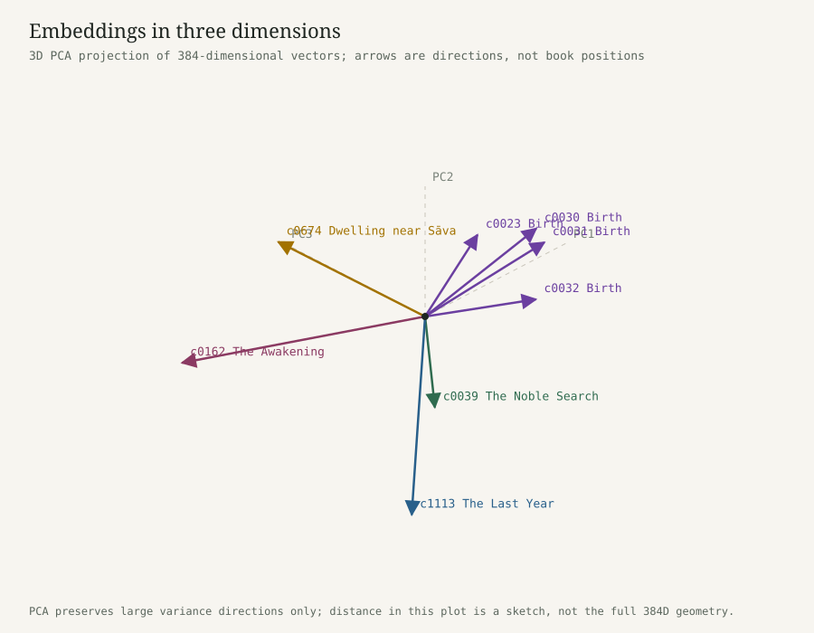

Worked example — eight vectors you can check
The trace picks four chapter-opening chunks and the four passages retrieved for the demo-01 question. It prints a sample of each vector, compares neighbours, runs PCA and writes both assets shown below. Each step is expandable.
04_embeddings
Source: 04_embeddings.py (expand)
"""Inspect dense embeddings instead of only their scores.
Step 1: load the chunks and the 1404 x 384 dense matrix.
Step 2: choose labelled chunks from several chapters plus the demo-01 hits.
Step 3: print a vector sample and write full vectors to a JSON asset.
Step 4: compute cosine neighbours inside the selected set.
Step 5: project to 3D with PCA and write an isometric SVG of arrows.
Step 6: state what the plot shows and what it does not mean.
Run from the repo root:
.venv/bin/python demos/04_embeddings.py
Writes docs/assets/embedding-vectors.json and docs/assets/embeddings-3d.svg.
No chat model is called. All numbers print at 2 decimals.
"""
import html
import json
import sys
from pathlib import Path
sys.path.insert(0, str(Path(__file__).resolve().parent.parent))
import numpy as np
from sklearn.decomposition import PCA
from rag.config import Settings
from rag.index import DenseIndex
from rag.retrieve import Retriever
from rag.chunk import load_chunks
QUESTION = "Where was the bodhisatta born?"
ASSETS = Path(__file__).resolve().parent.parent / "docs" / "assets"
PALETTE = ["#2f6b4f", "#8b3a62", "#a27200", "#285f8a", "#6b3fa0"]
def arrow_svg(points: np.ndarray, labels: list[str], colors: list[str]) -> str:
"""Draw labelled 3D arrows using an isometric projection.
Args:
points: selected rows of the PCA result, shape (n, 3).
labels: one short label per row.
colors: one hex colour per row.
Returns:
A complete SVG document as a string.
"""
scales = np.maximum(np.max(np.abs(points), axis=0), 1e-9)
scaled = points / scales
cx, cy, factor = 470, 350, 180
def project(x: float, y: float, z: float) -> tuple[float, float]:
px = cx + factor * (x - z) * 0.866
py = cy - factor * (y * 0.8 + (x + z) * 0.45)
return px, py
lines = [
'<svg xmlns="http://www.w3.org/2000/svg" viewBox="0 0 900 700" width="900" height="700">',
'<rect width="900" height="700" fill="#f7f5f0"/>',
'<text x="32" y="42" font-family="Georgia,serif" font-size="22" fill="#1f2621">Embeddings in three dimensions</text>',
'<text x="32" y="66" font-family="monospace" font-size="13" fill="#5b665d">3D PCA projection of 384-dimensional vectors; arrows are directions, not book positions</text>',
]
for number, colour in enumerate(dict.fromkeys(colors)):
lines.append(
f'<defs><marker id="arrow{number}" viewBox="0 0 10 10" refX="9" refY="5" '
f'markerWidth="7" markerHeight="7" orient="auto-start-reverse">'
f'<path d="M 0 0 L 10 5 L 0 10 z" fill="{colour}"/></marker></defs>'
)
marker_id = {colour: number for number, colour in enumerate(dict.fromkeys(colors))}
for axis, name in enumerate(("PC1", "PC2", "PC3")):
unit = np.zeros(3)
unit[axis] = 1.0
x, y = project(*unit)
lines.append(
f'<line x1="{cx}" y1="{cy}" x2="{x:.1f}" y2="{y:.1f}" '
'stroke="#c9c5ba" stroke-dasharray="5 5"/>'
)
lines.append(
f'<text x="{x + 8:.1f}" y="{y - 6:.1f}" font-family="monospace" '
f'font-size="13" fill="#7a837a">{name}</text>'
)
for index, (point, label, colour) in enumerate(zip(scaled, labels, colors)):
x, y = project(*point)
lines.append(
f'<line x1="{cx}" y1="{cy}" x2="{x:.1f}" y2="{y:.1f}" '
f'stroke="{colour}" stroke-width="2.5" '
f'marker-end="url(#arrow{marker_id[colour]})"/>'
)
anchor = "end" if x > 740 else "start"
dx = -9 if x > 740 else 9
lines.append(
f'<text x="{x + dx:.1f}" y="{y - 8:.1f}" text-anchor="{anchor}" '
f'font-family="monospace" font-size="13" fill="{colour}">'
f"{html.escape(label)}</text>"
)
lines.append(f'<circle cx="{cx}" cy="{cy}" r="4" fill="#1f2621"/>')
lines.append(
'<text x="32" y="680" font-family="monospace" font-size="12" fill="#5b665d">'
'PCA preserves large variance directions only; distance in this plot is a sketch, not the full 384D geometry.</text>'
)
lines.append("</svg>")
return "\n".join(lines)
settings = Settings.load()
dense_files = sorted(settings.index_dir.glob("dense-*.npy"))
if not dense_files:
raise RuntimeError("No dense index found; run ingest --embed-backend fastembed")
backend = dense_files[0].stem.removeprefix("dense-").split("-")[0]
settings = settings.overrides(embed_backend=backend)
chunks = load_chunks(settings)
dense = DenseIndex(settings).load()
matrix = dense.matrix
retriever = Retriever(settings, chunks=chunks)
hits = retriever.search(QUESTION, k=4, mode="hybrid")
print("== step 1: load the index ==")
print(f" chunks: {len(chunks)} | dense matrix: {matrix.shape} | dtype: {matrix.dtype}")
print(f" each row is one chunk vector; every row has length {np.linalg.norm(matrix[0]):.2f}")
chosen: list[int] = []
for chapter in ("The Noble Search", "The Awakening", "Dwelling near Sāvatthī", "The Last Year"):
candidates = [
i for i, chunk in enumerate(chunks)
if chunk.chapter == chapter and len(chunk.text) > 600
]
if candidates:
chosen.append(candidates[0])
for item in hits:
index = next(i for i, chunk in enumerate(chunks) if chunk.id == item.chunk.id)
if index not in chosen:
chosen.append(index)
print("\n== step 2: selected chunks ==")
for index in chosen:
chunk = chunks[index]
print(f" {chunk.id} [{chunk.citation}] section={chunk.section}")
print(f" {' '.join(chunk.text.split())[:110]}...")
ASSETS.mkdir(parents=True, exist_ok=True)
vectors = []
print("\n== step 3: vector sample and full vectors ==")
for index in chosen:
chunk = chunks[index]
row = matrix[index]
vectors.append({
"id": chunk.id,
"chapter": chunk.chapter,
"section": chunk.section,
"citation": chunk.citation,
"vector": [round(float(value), 6) for value in row],
})
head = ", ".join(f"{value:.2f}" for value in row[:12])
print(f" {chunk.id} first 12 of {len(row)}: {head}")
json_path = ASSETS / "embedding-vectors.json"
json_path.write_text(
json.dumps(vectors, ensure_ascii=False, indent=1), encoding="utf-8"
)
print(f" full 384-value vectors written to {json_path.relative_to(ASSETS.parent.parent)}")
selected = matrix[chosen]
print("\n== step 4: cosine neighbours inside the selected set ==")
similarity = selected @ selected.T
for position, index in enumerate(chosen):
others = [i for i in range(len(chosen)) if i != position]
top = sorted(others, key=lambda i: -similarity[position, i])[:3]
names = ", ".join(
f"{chunks[chosen[i]].id}={similarity[position, i]:.2f}" for i in top
)
print(f" {chunks[index].id}: {names}")
pca = PCA(n_components=3)
projected = pca.fit_transform(selected)
print("\n== step 5: PCA projection ==")
print(" explained variance: " + ", ".join(f"{v:.2f}" for v in pca.explained_variance_ratio_))
labels = [f"{chunks[index].id} {chunks[index].chapter[:18]}" for index in chosen]
chapter_colours = {
chapter: PALETTE[i % len(PALETTE)]
for i, chapter in enumerate(dict.fromkeys(chunks[index].chapter for index in chosen))
}
colors = [chapter_colours[chunks[index].chapter] for index in chosen]
svg_path = ASSETS / "embeddings-3d.svg"
svg_path.write_text(arrow_svg(projected, labels, colors), encoding="utf-8")
print(f" wrote {svg_path.relative_to(ASSETS.parent.parent)}")
print(f" {len(chosen)} arrows: one per selected chunk, from the origin")
print("\n== step 6: how to read the plot ==")
print(" Arrows point in the direction of each chunk's embedding after PCA.")
print(" Similar directions mean similar meaning in the model's space.")
print(" PCA keeps the three largest variance directions of 384, so it discards detail.")
Captured output — expand a step
step 1: load the index
chunks: 1404 | dense matrix: (1404, 384) | dtype: float32 each row is one chunk vector; every row has length 1.00
step 2: selected chunks
c0039 [p. 23, The Noble Search] section=The Noble Search
CHAPTER ONE The Noble Search The famous account of the bodhisatta’s original impulse in this lifetime to searc...
c0162 [p. 77, The Awakening] section=The Awakening
CHAPTER TWO The Awakening Even though the Buddha’s awakening was the most important accomplishment in his life...
c0674 [p. 312, Dwelling near Sāvatthī] section=Dwelling near Sāvatthī
CHAPTER NINE Dwelling near Sāvatthī During the Buddha’s lifetime, Sāvatthī, the capital of Kosala, was one of ...
c1113 [p. 515, The Last Year] section=The Last Year
CHAPTER FIFTEEN The Last Year We now return to a clear chronology because an entire sutta is devoted to the ev...
c0030 [pp. 16-17, Birth] section=Birth
strung a blue, yellow, red, white, or beige thread. And then a man of good eyesight, taking it in his hand, wo...
c0032 [pp. 17-18, Birth] section=Birth
mucus, unsullied by blood, unsullied by lymph: pure, very pure.’… “…‘When the bodhisatta left his mother’s wom...
c0023 [p. 14, Birth] section=Birth
PROLOGUE Birth The bodhisatta, or Buddha-to-be, was born into the Sakya family of the noble-warrior caste. The...
c0031 [p. 17, Birth] section=Birth
“…‘Whereas other women give birth while sitting or lying down, that’s not how the bodhisatta’s mother gave bir...
step 3: vector sample and full vectors
c0039 first 12 of 384: -0.06, 0.07, -0.04, 0.02, -0.06, 0.05, 0.09, -0.03, 0.01, -0.01, 0.03, -0.01 c0162 first 12 of 384: 0.01, 0.02, -0.03, 0.00, 0.01, 0.02, 0.07, -0.05, 0.04, 0.03, -0.06, -0.06 c0674 first 12 of 384: 0.00, 0.05, -0.02, -0.03, -0.05, 0.01, 0.09, 0.01, -0.02, 0.00, 0.03, -0.04 c1113 first 12 of 384: -0.08, 0.04, -0.02, -0.00, -0.04, -0.00, 0.05, 0.01, 0.06, -0.02, -0.02, -0.03 c0030 first 12 of 384: -0.05, -0.01, -0.07, 0.03, -0.06, 0.04, 0.07, -0.01, 0.00, -0.03, 0.03, -0.00 c0032 first 12 of 384: -0.03, 0.01, -0.05, 0.02, -0.03, -0.02, 0.07, -0.03, 0.00, -0.01, 0.00, -0.03 c0023 first 12 of 384: 0.04, 0.04, -0.07, -0.02, -0.04, 0.03, 0.08, -0.05, -0.04, 0.02, 0.02, -0.05 c0031 first 12 of 384: -0.01, 0.04, -0.06, 0.00, -0.07, -0.00, 0.06, -0.02, 0.03, -0.05, -0.03, -0.05 full 384-value vectors written to docs/assets/embedding-vectors.json
step 4: cosine neighbours inside the selected set
c0039: c1113=0.74, c0031=0.74, c0023=0.74 c0162: c0039=0.73, c1113=0.72, c0031=0.70 c0674: c0023=0.74, c0162=0.69, c0039=0.68 c1113: c0039=0.74, c0162=0.72, c0032=0.70 c0030: c0031=0.89, c0032=0.79, c0023=0.74 c0032: c0031=0.86, c0030=0.79, c0039=0.73 c0023: c0031=0.79, c0674=0.74, c0030=0.74 c0031: c0030=0.89, c0032=0.86, c0023=0.79
step 5: PCA projection
explained variance: 0.27, 0.19, 0.15 wrote docs/assets/embeddings-3d.svg 8 arrows: one per selected chunk, from the origin
step 6: how to read the plot
Arrows point in the direction of each chunk's embedding after PCA. Similar directions mean similar meaning in the model's space. PCA keeps the three largest variance directions of 384, so it discards detail.
The projection
Each arrow starts at the origin and points toward where a chunk's embedding lands after PCA. Direction matters more than distance here: arrows that point the same way represent chunks the model treats as similar.

Download the eight full 384-value vectors (JSON) — the plot shows three derived numbers; this file contains all of them.
What an embedding is
A dense embedding is 384 learned numbers. Unlike a TF-IDF vector, no slot names a word and almost none of the slots are zero. Meaning lives in the pattern of small positive and negative values across all dimensions, which is why the first twelve coordinates in the trace are only a sample and not individually readable. The model was trained so that passages with related meanings end up pointing in similar directions.
That is why c0023 scores only 0.10 on lexical similarity for the birthplace question but 0.80 on dense similarity. Its words are the Sakya family and Kapilavatthu, not the question's wording, yet the embedding places it near the question in meaning.
What PCA keeps and discards
PCA finds the directions of largest spread in the eight vectors. The first three components explain 0.27, 0.19 and 0.15 of the variance — about 61 percent combined. The remaining 39 percent lives in dimensions this plot cannot show. So the figure is a sketch of the geometry, not a map of the book, and a short apparent distance between two arrow tips does not prove the full vectors are close.
How this differs from the lexical index
TF-IDF dimensions are counted words: interpretable, sparse, and blind to different wording for the same idea. Embedding dimensions are learned features: dense, harder to read one at a time, but able to connect a passage about Kapilavatthu to a question about where the bodhisatta was born. The hybrid score in module 02 exists because neither view is complete on its own.
Questions that came up while learning this
These are the questions asked while going through the trace. Open one to read the explanation.
What is the vocabulary of the dense embedding? Some examples, words or tokens?
There are two different vocabularies here. The tokenizer's input vocabulary is fixed by the model, not learned from this book: 30,522 WordPiece tokens, lowercase, plus special tokens like [CLS] and [SEP]. Checking the cached tokenizer gives these real splits:
born stays born; mother stays mother; bodhisatta becomes bo ##dhi ##sat ##ta; Kapilavatthu becomes ka ##pi ##lav ##att ##hu. ## means a continuation of the previous word. The full demo question is [CLS] where was the bo ##dhi ##sat ##ta born ? [SEP].
The output side has no word vocabulary at all. Its 384 slots are learned features with no labels, so no slot means born; a word's meaning is spread across many dimensions. The TF-IDF vocabulary has 27,246 book-derived terms with readable names. The two sizes are coincidentally similar and unrelated. The dense model also reads at most 512 tokens at a time, so a long chunk can be truncated on input.
Is there a corresponding dimension for the TF-IDF model? Isn't it the same as its vocabulary size?
Yes. The TF-IDF vector length equals the number of learned terms: lexical.matrix has shape (1404, 27246), one row per chunk and one column per term. get_feature_names_out() gives the names in column order and vocabulary_ maps a term to its column, which is how step 9 prints a word beside a non-zero weight.
The query is transformed into the same 27,246-column space, so matching columns mean the same thing. Change max_features or ngram_range and the dimension changes, requiring a re-ingest; the dense model's 384 dimensions are fixed by its architecture.
TF-IDF has no learned embedding table. You can picture it as an identity matrix of size 27,246 × 27,246: term j maps to a 1 in column j and zeros elsewhere. That is why each coordinate is readable and why the matrix is stored sparsely. People call this the feature space rather than the embedding dimension, but it is the dimensionality of each chunk's vector.